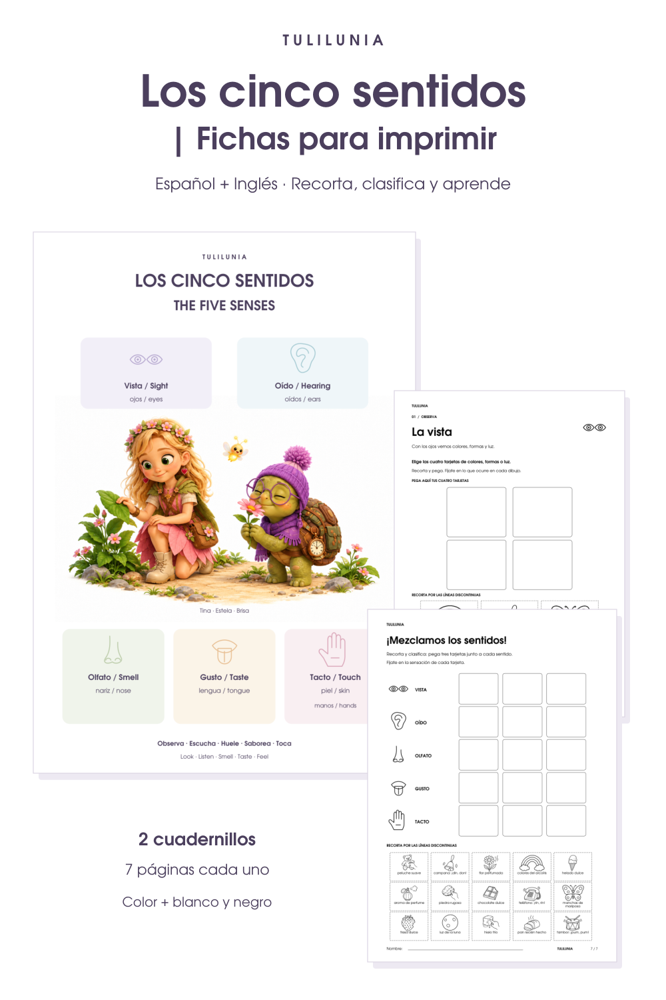

Recurso gratuito · Infantil y Primaria
Los cinco sentidos
Descubre la vista, el oído, el olfato, el gusto y el tacto con Tina, Estela y Brisa. Dos cuadernillos ilustrados para recortar, clasificar y pegar, disponibles en español e inglés.
Descarga gratuita y directa. Sin registro.

¿Qué incluye cada cuadernillo?
- 7 páginas en formato A4.
- Un póster bilingüe a color con los cinco sentidos y sus órganos.
- Cinco actividades de selección, recorte y pegado en blanco y negro.
- Una actividad final con quince tarjetas mezcladas: tres por sentido.
Antes de imprimir
Imprime en A4, a tamaño real (100 %) y por una sola cara. La primera página está preparada a color; las páginas 2 a 7 son aptas para fotocopiar y colorear. Las tarjetas caben en los espacios de pegado.
En Infantil, acompaña la lectura de las instrucciones y el uso de las tijeras. Fíjate en la sensación o acción que aparece en cada tarjeta: un mismo objeto puede percibirse con distintos sentidos.